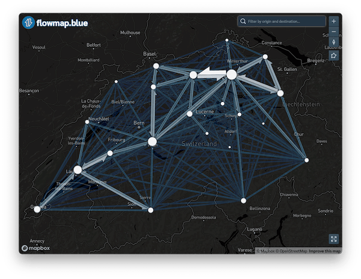

WORK IN PROGRESS
This is a Flowmap.blue widget for R. Create interactive flow maps using FlowmapBlue TypeScript library, which is a free tool for representing aggregated numbers of movements between geographic locations as flow maps. It is used to visualize urban mobility, commuting behavior, bus, subway and air travels, bicycle sharing, human and bird migration, refugee flows, freight transportation, trade, supply chains, scientific collaboration, epidemiological and historical data and many other topics. The package allows to either create standalone flow maps in form of ‘htmlwidgets’ and save them in ‘HTML’ files, or integrate flow maps into ‘Shiny’ applications.
You might also consider using this pure R flowmapping library based on ggplot2: https://github.com/JohMast/flowmapper

As an alternative, you may also consider using R to populate a spreadsheet for publishing on Flowmap.blue as described in this excellent blog post.
Installation
Install from CRAN:
install.packages("flowmapblue")To install the development version from GitHub you will need to install remotes if you don’t have it yet:
if (!require("remotes")) install.packages("remotes")
remotes::install_github("FlowmapBlue/flowmapblue.R",
force = TRUE, dependencies = TRUE)Quick example
Setup your Mapbox access token. You can obtain a free token by signing up at Mapbox.
Sys.setenv(MAPBOX_API_TOKEN = "YOUR_MAPBOX_ACCESS_TOKEN")
library(flowmapblue)
# load locations and flows for Switzerland
data(ch_locations)
data(ch_flows)
flowmap <- flowmapblue(
ch_locations,
ch_flows,
mapboxAccessToken = Sys.getenv('MAPBOX_API_TOKEN'),
clustering = TRUE,
darkMode = TRUE,
animation = FALSE
)
# view the map
flowmapHere is a nice intro blog post by Paula Moraga.
For more examples with time and date in flows data, as well as integration with Shiny, see the Quick Start vignette and documentation for the package functions at https://flowmapblue.github.io/flowmapblue.R/.